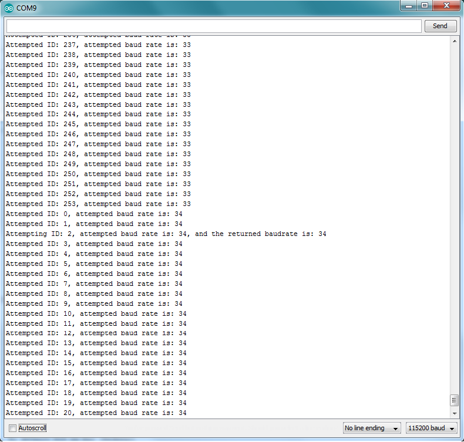

Example 4 - Finding your servo
If by any chance you don't remember the ID of your servo or the correct baudrate to communicate with it, then the servo is useless. However, with this function you can find it (connect only one servo to the bus). The servo ID and the baudrate it uses to communicate will be printed on the serial monitor. The baudrate value will be an integer [0,255]. Refer to the ROBOTIS manual for its equivalent in bps.
/*
* Copyright (c) 2016 Fabian Eugenio Reyes Pinner (Fabian Reyes)
*
* Permission is hereby granted, free of charge, to any person obtaining a copy of this software and associated documentation files (the "Software"),
* to deal in the Software without restriction, including without limitation the rights to use, copy, modify, merge, publish, distribute, sublicense,
* and/or sell copies of the Software, and to permit persons to whom the Software is furnished to do so, subject to the following conditions:
*
* The above copyright notice and this permission notice shall be included in all copies or substantial portions of the Software.
*
* THE SOFTWARE IS PROVIDED "AS IS", WITHOUT WARRANTY OF ANY KIND, EXPRESS OR IMPLIED, INCLUDING BUT NOT LIMITED TO THE WARRANTIES OF MERCHANTABILITY,
* FITNESS FOR A PARTICULAR PURPOSE AND NONINFRINGEMENT. IN NO EVENT SHALL THE AUTHORS OR COPYRIGHT HOLDERS BE LIABLE FOR ANY CLAIM, DAMAGES OR OTHER
* LIABILITY, WHETHER IN AN ACTION OF CONTRACT, TORT OR OTHERWISE, ARISING FROM, OUT OF OR IN CONNECTION WITH THE SOFTWARE OR THE USE OR OTHER DEALINGS
* IN THE SOFTWARE.
*
*/
/*
* In this example, we will try to find a servo without knowing its ID nor the correct baudrate for communication.
* In this case, you do not neet to use Dynamixel.begin() to start communication.
* The results of the search will be printed onto the Serial Monitor.
*/
SYSTEM_MODE(MANUAL); //do not connect to the cloud. Communicate with the servo immediately
//The DuoDMXL library allows communication with the servo
#include <DuoDMXL.h>
int led1 = D7; //onboard LED
int dataPin = D15; //Pin used to control Data flow between the DUO and Dynamixel. By default we use the D15 Pin which is closest to the TX and RX pins
void setup() {
pinMode(led1, OUTPUT); //prepare the on-board LED
Serial.begin(115200); //Start communication with the PC;
delay(1000); //Let's wait a little bit
}
void loop() {
digitalWrite(led1, HIGH); //turn on on-board LED to show that the loop has started
Dynamixel.findServo(dataPin); //To start searching for the servo, specify the pinthat controls the direction of communication. By default D15 in Duo (Redbear)
digitalWrite(led1, LOW);
}
The output of the terminal will look like this:

The servo found has ID 2 and the baudrate (table value) is 34.
According to the Robotis manual, this corresponds to 57142.9 bps (often rounded up to 57600 bps).